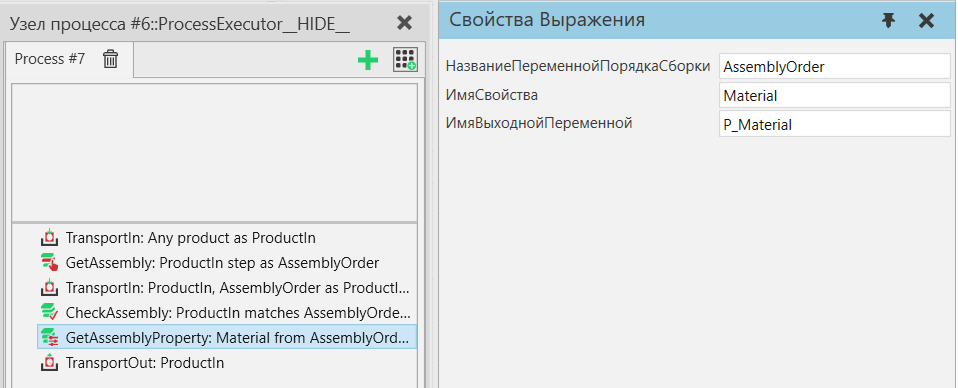

Получить свойство сборки |
|
Находит свойство из выбранных шагов сборки типа сборки и копирует его значение в переменную процесса. Порядок сборки используется для определения одного или нескольких шагов сборки из типа продукта сборки, который должен содержать определяемое пользователем свойство. Выбранные шаги сборки просматриваются в порядке сборки, и выбирается первое свойство с заданным именем.  Рисунок 1. Пример процесса, в который транспортируется экземпляр сборки, значение свойства «Material» извлекается из одного из его шагов сборки и экземпляр сборки транспортируется из процесса. Свойства
|